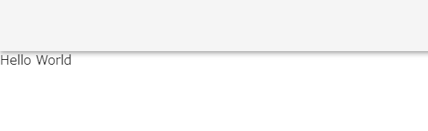

Rails + Vue.jsのプロジェクトを作ってVue.jsのキャッチアップ中です。 このプロジェクトにVuetifyを導入していきます。
プロジェクト構成
プロジェクトの構成はこのような感じです。
■バックエンド
ruby: 2.7.1
Rails: 6.0.3.7
■フロントエンド
node: 12.18.3
Vue: 2.6.11
TypeScript: 4.1.5
■データベース
MySQL: 5.7
環境構築は下記の記事を参考にしました。
DockerでRails + Vue + MySQLの環境構築をする方法【2020/09最新版】 - Qiita
Vuetifyの導入
UIフレームワークのVuetifyを導入していきます。
Vuetify — A Material Design Framework for Vue.js
Vue CLIによるインストールを行う。
Docker上に構築しているので下記コマンドでインストールします。
docker-compose run --rm front vue add vuetify
コマンドを実行すると選択式でインストールが進んでいきます。
npm 本家のレジストリへの接続が遅いのでミラーサイトを使用しますか？という意味です。 今回はミラーサイトを使用せずに本家を使用するため、「No」で進めます。
? Your connection to the default npm registry seems to be slow.
Use https://registry.npm.taobao.org for faster installation? No
プリセットの選択を聞かれますが、「 Configure (advanced) 」を選択し詳細を設定する方を選びます。
? Choose a preset: Configure (advanced)
App.vueとHelloWorld.vueを既成のVuetifyのテンプレートを使うか聞かれますが、「No」で進めます。
? Use a pre-made template? (will replace App.vue and HelloWorld.vue) No
カスタムテーマを使うか聞かれますが、「No」で進めます。
? Use custom theme? No
カスタムCSSを使うか聞かれますが、「No」で進めます。
? Use custom properties (CSS variables)? No
アイコンフォントは何を使うか聞かれますが、「Material Design Icons」で進めます。
? Select icon font Material Design Icons
Googleフォント、アイコン用のフォントをインターネット経由で読み込むのではなく、Node.jsパッケージとしてインストールしたいので、「Yes」で進めます。
? Use fonts as a dependency (for Electron or offline)? Yes
必要なコンポーネントだけ使用しますか？という意味？？(ここはいまいちわからなかった。) 一旦「Yes」で進めます。
? Use a-la-carte components? Yes
Vuetifyで言語を「Japanese」で進めます。
? Select locale Japanese
これでVuetifyのインストールが始まります。
特に何もしなくても必要な設定がされますが、
TypeScriptを導入しているためtsconfig.jsonに次の文を追加します。
"types": [
"webpack-env",
"jest",
"vuetify" // 追加
],
これで導入は終わりです。
次に動作確認を行います。
Vuetifyの動作確認
front/src/App.vue
<template>
<v-app>
<router-view />
</v-app>
</template>
front/src/views/HelloWorld.vue
<template>
<div> // → テンプレートルートは1つ必要なのでとりあえずdivで対応してエラー回避
<v-app-bar></v-app-bar>
<v-main>Hello World</v-main>
</div>
</template>
わかりにくいですが、UIが変わっているのでこれで動作確認完了です。 あとはVuetifyを使って書いていくだけです。
